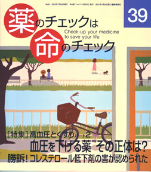

No.39 [特集] 高血圧とくすりパート２ 血圧を下げる薬 その正体は？ 2010年7月 発行
勝訴！コレステロール低下剤の害が認められた

今号も特集は「高血圧とくすり」です。
前号ではパート１として、読者からの相談に具体的にお答えすることで「本当に血圧を下げる必要があるのかどうか？」
を一緒に考えていただきました。そして、「高血圧治療ガイドライン」の問題点を指摘しました。
それほど高くもない血圧に降圧剤を使って血圧を下げすぎているために、かえって死亡を増やしている可能性が高いと
考えられたからです。
この号（パート２）では、本当に降圧剤が必要なのはどのような場合であるのか、
降圧剤を使うという判断をする前に、確かめておかなければならないこと、
降圧剤の種類とその効き方、害（副作用）、どのような降圧剤を選ぶのがよいのかを解説します。
もくじ
特集 高齢者とくすり（３）高血圧とくすり（２）
■ 血圧はなぜ上下するのか？ ー その調節の仕組みを知ろう
■ 血圧が高いと言われたら？ ー 薬を飲む前にこれだけはチェックを
■ 降圧剤の売上げはどう変化してきたか？ ー なぜこんなに儲かるの？
■ 血圧を下げるくすりがわかるコーナー 浜 六郎
降圧剤の種類とそのはたらき
降圧剤を評価する
時事
■ 新・市民の視点 医療裁判の意味を問う・・・大淀事件訴訟 栗岡幹英
■ 2009年ブタインフルエンザ・パジック 集団ヒステリーの検証 木元康介
連載
■ 医師国家試験に挑戦しよう！ 木元康介
■ コーヒー無礼区 坂口啓子
■ リレーエッセー 被災者であり被災者と共に歩む15年間 黒田裕子
■ みんなのやさしい生命倫理（39）生老病死（9） 谷田憲俊
提言
■ コレステロール低下剤の安易な処方を反省しよう 浜 六郎
その他
■ 海外情報 製薬企業の医療従事者への支払い開示が義務化
■ 質問箱（１）突発性発疹？ かぜ？ 治療は？
（２）降圧剤で認知症になる？
（３）これまでの記事の見直しは？たとえばアクトス
（４）脱保湿の意味をくわしく知りたい
■ 読者の声
■ 第４期モニター募集
■ 書評/次号予告
■ 医師国家試験の解答
■ 用語解説
■ バックナンバー一覧
■ 書籍申込用紙
■ 編集後記/奥付